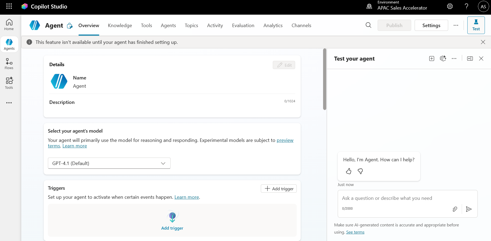

🌐 Introduction
In this lab, you will build an autonomous Copilot Studio agent that proactively monitors regulatory updates published by the Insurance Regulatory and Development Authority of India (IRDAI).
The agent, IRDAI Regulations Agent, is designed to:
- Track regulatory circulars relevant to non-life insurers
- Periodically scan authoritative web content
- Generate concise summaries for compliance and regulatory teams
This lab introduces autonomy configuration, enabling agents to act independently without explicit user prompts.
🎓 Core Concepts Overview
| Concept | Why it matters |
|---|---|
| Autonomous Agent | Operates independently by initiating tasks based on schedules or conditions rather than direct user input. |
| Web-Based Knowledge Source | Enables agents to retrieve information from authoritative public websites. |
| Autonomy Configuration | Defines how and when an agent initiates actions such as periodic monitoring. |
| Regulatory Monitoring | Ensures organizations stay informed about compliance updates and policy changes. |
| Grounding | Anchors summaries in official regulatory content to ensure accuracy and trust. |
✅ Prerequisites
- Access to Microsoft Copilot Studio
- Permission to create autonomous agents
- Internet access to public regulatory websites
- Familiarity with regulatory or compliance concepts (recommended)
🎯 Summary of Targets
By the end of this lab, you will be able to:
- Create an autonomous Copilot Studio agent
- Configure a regulatory compliance persona
- Add and scope web-based regulatory knowledge sources
- Configure autonomous execution schedules
- Validate regulatory summaries
- Publish the agent for operational use
🧩 Use Cases Covered
| Step | Use Case | Value added | Effort |
|---|---|---|---|
| 1 | Autonomous Agent with Web-Based Knowledge | Enables proactive monitoring and summarization of regulatory circulars | 25 min |
🛠️ Step-by-Step Instructions
Step 1 — Create the Autonomous Agent
- Open Copilot Studio.
- Select Create → Copilot.
- Choose the Autonomous agent type.
- Enter the following details:
- Name: IRDAI Regulations Agent
- Description: Autonomous agent that monitors and summarizes IRDAI regulatory circulars for non-life insurers
- Language: English
- Select Create.

Step 2 — Configure Persona and Instructions
Navigate to Settings → Instructions and configure:
- Persona: Regulatory Compliance Analyst
- Tone: Formal, precise, and compliance-focused
- Knowledge usage rule: Answer only using configured regulatory sources
- Content constraints: Do not interpret beyond published regulatory guidance
💡
Tip: A compliance-focused persona ensures summaries remain factual, neutral, and
audit-friendly.
Step 3 — Add Web-Based Knowledge Source
- Navigate to Knowledge → Add knowledge source.
- Select Website.
- Configure the source:
- URL: https://irdai.gov.in/insurers/non-life-insurers
- Domain: irdai.gov.in
- Crawl depth: 2
- Save the configuration and allow indexing to complete.
⚠️
Important: Regulatory sites should be scoped carefully to avoid unrelated content.
Step 4 — Configure Autonomy
- Navigate to Autonomy settings.
- Enable Self-initiation.
- Configure execution frequency:
- Daily or Weekly (based on operational needs)
- Save the autonomy configuration.
Step 5 — Validate Agent Queries
- Open the Test Canvas.
- Ask the agent: Summarize latest IRDAI circulars
- Validate that summaries:
- Reference recent regulatory updates
- Are concise and accurate
- Reflect the defined compliance tone
Step 6 — Publish the Agent
- Once validation is complete, select Publish.
- Make the agent available to the intended channels or operational users.
🏅 Congratulations! Your IRDAI Regulations Agent is now autonomous!
🧠 Test Your Understanding
Key takeaways:
- Autonomous agents operate without direct user prompts
- Scheduled execution is ideal for monitoring use cases
- Regulatory agents must prioritize accuracy over interpretation
Reflection questions:
- How would you route summaries to compliance teams?
- What cadence best balances freshness and noise?
- How would you detect and handle regulatory website changes?
🔁 Summary of Learnings
- Created an autonomous Copilot Studio agent
- Configured regulatory persona and tone
- Grounded responses in authoritative web content
- Enabled scheduled autonomous execution
- Validated and published the agent
📌 Conclusions & Recommendations
ℹ️
Important: When building autonomous regulatory agents:
- Scope knowledge sources narrowly
- Keep autonomy frequency intentional
- Validate summaries regularly
- Treat outputs as decision-support, not legal advice
This ensures autonomous agents remain trustworthy, compliant, and operationally valuable.